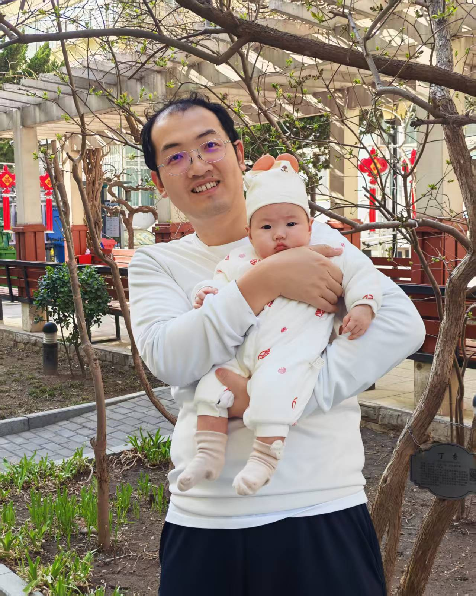
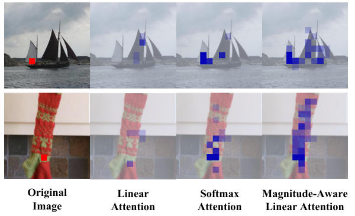
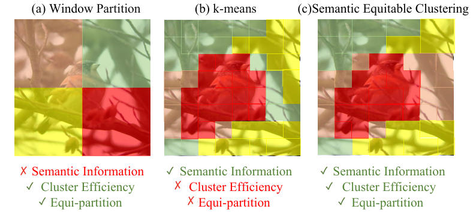
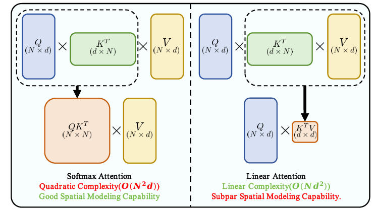
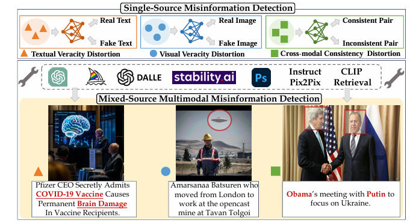
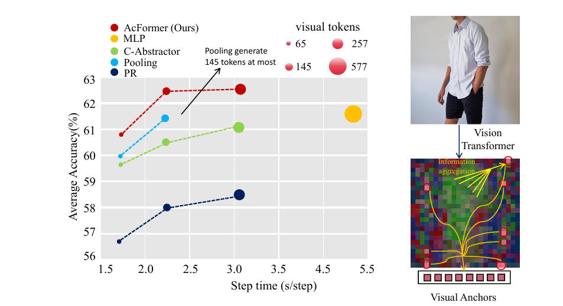
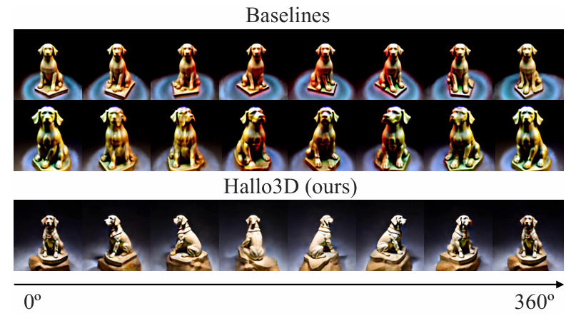

|
 |
Huaibo Huang (黄怀波)
|
I am an associate professor at Institute of Automation, Chinese Academy of Sciences (CASIA). I obtained my Ph.D. degree from CRIPAC-NLPR-CASIA in 2019, under the supervision of Prof. Tieniu Tan. Prior to that, I received my M.E. from Beihang University in 2016, supervised by Prof. Di Feng, and my B.E. from Xi’an Jiaotong University in 2012.
My current research interests mainly focus on multimodality, generative learning and low-level vision.
I am open to any discussion or collaboration. If you are interested, please feel free to contact me.
|
DiCo: Revitalizing ConvNets for Scalable and Efficient Diffusion Modeling |
|
 |
Rectifying Magnitude Neglect in Linear Attention |
|
 |
Semantic Equitable Clustering: A Simple and Effective Strategy for Clustering Vision Tokens |
|
 |
Breaking the Low-Rank Dilemma of Linear Attention |
|
 |
MMFakeBench: A Mixed-Source Multimodal Misinformation Detection Benchmark for LVLMs |
|
DreamClear: High-Capacity Real-World Image Restoration with Privacy-Safe Dataset Curation |
|
 |
Visual Anchors Are Strong Information Aggregators For Multimodal Large Language Model |
|
 |
Hallo3D: Multi-Modal Hallucination Detection and Mitigation for Consistent 3D Content Generation |
Journal Associate Editor: IEEE T-BIOM
Journal Reviewer: TPAMI, IJCV, TIP, TIFS, TCSVT, PR
Conference Area Chair: ACMMM, ICLR, PRCV
Conference Reviewer: NeurIPS, ICLR, ICML, CVPR, ICCV, ECCV
[2024.03] 吴文俊人工智能科学技术奖技术发明一等奖（First Prize of Wu Wenjun AI Technology Invention Award）(3/6)
[2023.11] 北京市科技新星创新新星（Beijing Nova Program）
[2023.06] Runner-Up Award in NTIRE 2023 Challenge on 360°Omnidirectional Image Super-Resolution
[2023.06] 2nd Place Award in NTIRE 2023 Challenge on Image Super-Resolution (x4)
[2022.01] 中国科学院青年创新促进会会员（Member of CAS Youth Innovation Promotion Association）
[2020.01] 北京市科学技术协会青年人才托举工程（BAST Young talents Lift Engineering）
[2019.07] International Workshops of ITMC in ICME Best Student Paper Award
[2019.06] 北京市优秀毕业生（Beijing Outstanding Graduates）
[2019.06] 中国科学院院长优秀奖（Chinese Academy of Sciences Presidential Scholarship）